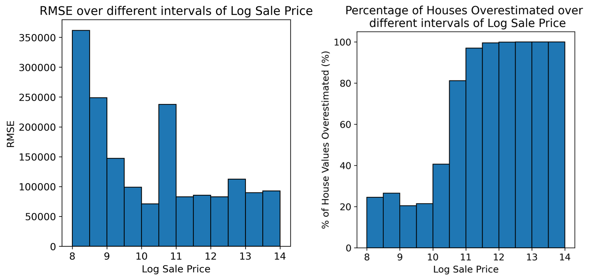

8 Gradient Descent, Feature Engineering, Housing
8.0.1 Link to Slides
8.1 Dive into Gradient Descent
We want to minimize the loss function \(L(\theta) = (\theta_1-1)^2 + |\theta_2-3|\). While you may notice that this function is not differentiable everywhere, we can still use gradient descent wherever the function is differentiable!
Recall that for a function \(f(x) = k|x|\), \(\frac{df}{dx} = k\) for all \(x > 0\) and \(\frac{df}{dx} = -k\) for all \(x < 0\).
8.1.1 (a)
What are the optimal values \(\hat{\theta}_1\) and \(\hat{\theta}_2\) to minimize \(L(\theta)\)? What is the gradient at those values \(\nabla L = \begin{bmatrix} \frac{\partial L}{\partial \theta_1} & \frac{\partial L}{\partial \theta_2} \end{bmatrix}^T \Bigr|_{\substack{\theta_1 = \hat{\theta}_1, \theta_2 = \hat{\theta}_2}}\)?
Answer
We can start off by finding the partial derivatives:
- \(\frac{\partial L}{\partial \theta_1} = 2(\theta_1 - 1)\)
- The above derivative is \(0\) when \(\theta_1 = 1\)
- \(\frac{\partial L}{\partial \theta_2} = \begin{cases}
1 & \text{if } \theta_2 > 3 \\
-1 & \text{if } \theta_2 < 3 \\
\text{undefined} & \text{if } \theta_2 = 3
\end{cases}\)
- Although the partial derivative is undefined at \(\theta_2 = 3\), we can see that \(\theta_2 = 3\) is a minimizing value of \(L(\theta)\) (\(|3 - 3| = 0\), which is the smallest possible result).
Therefore, the gradient at the optimal values of \(\theta_1, \theta_2\) is:
\[\begin{align*} \nabla L &= \begin{bmatrix} \frac{\partial L}{\partial \theta_1} & \frac{\partial L}{\partial \theta_2} \end{bmatrix}^T \Bigr|_{\substack{\theta_1 = \hat{\theta}_1, \theta_2 = \hat{\theta}_2}} \\ &= [0, \text{undefined}]^T \end{align*}\]
8.1.2 (b)
Suppose we initialize our gradient descent algorithm randomly at \(\theta_1 = 2\) and \(\theta_2 = 5\). Calculate the gradient \(\nabla L = \begin{bmatrix} \frac{\partial L}{\partial \theta_1} & \frac{\partial L}{\partial \theta_2} \end{bmatrix}^T \Bigr|_{\substack{\theta_1 = 2, \theta_2 = 5}}\) at the specified \(\theta_1\) and \(\theta_2\) values.
Answer
We can simply substitute the values into the partial derivates we obtained in the previous question:
\[\begin{align*} \begin{bmatrix} \frac{\partial L}{\partial \theta_1} \\\\ \frac{\partial L}{\partial \theta_2} \end{bmatrix} &= \begin{bmatrix} 2(\theta_1-1) \\ 1 \end{bmatrix} \\ &= \begin{bmatrix} 2 \\ 1 \end{bmatrix} \end{align*}\]
8.1.3 (c)
Apply the first gradient update with a learning rate \(\alpha = 0.5\). In other words, calculate \(\theta_1^{(1)}\) and \(\theta_2^{(1)}\) using the initializations \(\theta_1^{(0)} = 2\) and \(\theta_2^{(0)} = 5\).
Answer
\[\begin{align*} \theta^{(1)} &= \theta^{(0)} - \alpha\nabla L\\ &= \begin{bmatrix} 2 \\ 5 \end{bmatrix} - 0.5\begin{bmatrix} 2 \\ 1 \end{bmatrix}\\ &= \begin{bmatrix} 2 - 0.5(2) \\ 5 - 0.5(1) \end{bmatrix}\\ &= \begin{bmatrix} 1 \\ 4.5 \end{bmatrix} \end{align*}\]
8.1.4 (d)
How many gradient descent steps does it take for \(\theta_1\) and \(\theta_2\) to converge to their optimal values obtained in part (a) assuming we keep a constant learning rate of \(\alpha = 0.5\)? In other words, what is the value of t when \(\theta^{(t)}=\begin{bmatrix} \hat{\theta}_1& \hat{\theta}_2 \end{bmatrix}^T\).
Hint: After part (c), what is the derivative \(\frac{\partial L}{\partial \theta_1}\) evaluated at \(\theta_1^{(1)}\)?
Answer
Note that the derivative with respect to \(\theta_1\) is 0 at \(\theta_1^{(1)} = 1\) since it is the optimal solution! Then, we essentially only update \(\theta_2\) where the partial derivative is always 1 (until we reach the optimal solution - then our derivative is undefined)! Every time, the partial derivative of \(\theta_2\) is 1 - so the update is simply:
\[\begin{align*} \theta_2^{(i+1)} = \theta_2^{(i)} - 0.5 \end{align*}\]
Hence, to update this from 5 to 3, we must take 4 gradient steps (i.e. from 5 to 4.5, 4.5 to 4, 4 to 3.5, 3.5 to 3).
Writing this all out:
\[ \theta^{(2)} = \theta^{(1)} - \alpha \nabla L = \begin{bmatrix} 1 - 0.5(0) \\ 4.5 - 0.5(1) \end{bmatrix} = \begin{bmatrix} 1 \\ 4 \end{bmatrix} \]
\[ \theta^{(3)} = \theta^{(2)} - \alpha \nabla L = \begin{bmatrix} 1 - 0.5(0) \\ 4 - 0.5(1) \end{bmatrix} = \begin{bmatrix} 1 \\ 3.5 \end{bmatrix} \]
\[ \theta^{(4)} = \theta^{(3)} - \alpha \nabla L = \begin{bmatrix} 1 - 0.5(0) \\ 3.5 - 0.5(1) \end{bmatrix} = \begin{bmatrix} 1 \\ 3 \end{bmatrix} \]
Notice that every time, we reduce \(\theta_2\) by 0.5 as expected, so the number of gradient descent steps is 4.
8.2 One-hot Encoding
In order to include a qualitative variable in a model, we convert it into a collection of Boolean vectors that only contain the values 0 and 1. For example, suppose we have a qualitative variable with 3 possible values, call them \(A\), \(B\), and \(C\), respectively. For concreteness, we use a specific example with 10 observations: \[ [A, A, A, A, B, B, B, C, C, C] \] We can represent this qualitative variable with 3 Boolean vectors that take on values \(1\) or \(0\) depending on the value of this qualitative variable. Specifically, the values of these 3 Boolean vectors for this dataset are \(x_A\), \(x_B\), and \(x_C\), arranged from left to right in the following design matrix, where we use the following indicator variable:
\[\begin{align*} x_{i,k} =\begin{cases} 1 &\text{if $i$-th observation has value $k$}\\ 0 &\text{otherwise}. \end{cases} \end{align*}\]
Furthermore, let \(\vec{y}\) represent any vector of outcome variables, and \(y_i\) is the value of said outcome for the \(i\)-th subject. This representation is also called one-hot encoding. It should be noted here that \(\vec{x_A}\), \(\vec{x_B}\), \(\vec{x_C}\), and \(\vec{y}\) are all vectors.
\[ \Bbb{X} = \begin{bmatrix} \vert & \vert & \vert \\ \vec{x_A} & \vec{x_B} & \vec{x_C} \\ \vert & \vert & \vert \\ \end{bmatrix} = \begin{bmatrix} 1 & 0 & 0\\ 1 & 0 & 0\\ 1 & 0 & 0\\ 1 & 0 & 0\\ 0 & 1 & 0\\ 0 & 1 & 0\\ 0 & 1 & 0\\ 0 & 0 & 1\\ 0 & 0 & 1\\ 0 & 0 & 1\\ \end{bmatrix} \]
We will show that the fitted coefficients for \(\vec{x_A}\), \(\vec{x_B}\), and \(\vec{x_C}\) are \(\bar{y}_A\), \(\bar{y}_B\), and \(\bar{y}_C\), the average of the \(y_i\) values for each of the groups, respectively.
8.2.1 (a)
Show that if you augment your \(\mathbb{X}\) matrix with an additional \(\vec{1}\) bias vector as shown below, \(\mathbb{X}^T\mathbb{X}\) is not full rank. Conclude that the new \(\mathbb{X}^T\mathbb{X}\) is not invertible, and we cannot use the least squares estimate in this situation.
\[\begin{align*} \mathbb{X} = \begin{bmatrix} \vert & \vert & \vert & \vert \\ \vec{1} & \vec{x_A} & \vec{x_B} & \vec{x_C} \\ \vert & \vert & \vert & \vert \\ \end{bmatrix} \end{align*}\]
Answer
Solution 1:
By the definition of one-hot encoding, the one-hot-encoded columns of \(\mathbb{X}\) sum up to $ $:
\[ \vec{x_A} + \vec{x_B} + \vec{x_C} = \vec{1}\]
Since the leftmost vector of \(\mathbb{X}\) is a linear combination of the other vectors, \(\mathbb{X}\) is not full column rank. Since \(\mathbb{X}\) has the same rank as \(\mathbb{X}^T\mathbb{X}\) (proof is out of scope), \(\mathbb{X}^T\mathbb{X}\) is not invertible.
Solution 2: We can show that \(\mathbb{X}^T\mathbb{X}\) is equal to the following.
\[ \mathbb{X}^T\mathbb{X} = \begin{bmatrix} n & n_A & n_B & n_C \\ n_A & n_A & 0 & 0 \\ n_B & 0 & n_B & 0 \\ n_C & 0 & 0 & n_C \end{bmatrix} \]
It can be observed that since \(n_A + n_B + n_C = n\), the sum of the final 3 columns subtracted from the first column yields the zero vector \(\vec{0}\). By the definition of linear dependence, we can conclude that this matrix is not full rank, and hence, we cannot invert it. As a result, we cannot compute our least squares estimate since it requires \(\mathbb{X}^T\mathbb{X}\).
8.2.2 (b)
Show that the columns of \(\mathbb{X}\) (without the additional \(\vec{1}\) bias vector) are orthogonal, (i.e., the dot product between any pair of column vectors is 0).
Answer
The argument is the same for any pair of \(\Bbb{X}\)’s columns so we show the orthogonality for one pair, \(\vec{x_A} \cdot \vec{x_B}\).
\[\begin{align*} \vec{x_A} \cdot \vec{x_B} &= \sum_{i=1}^{10} x_{A,i} x_{B,i} \\ &= \sum_{i=1}^4 (1 \times 0) + \sum_{i=5}^7 (0 \times 1) + \sum_{i=8}^{10} (0 \times 0) \\ &= 0 \end{align*}\]
8.2.3 (c)
Show that \[ \mathbb{X}^T\Bbb{X} = \begin{bmatrix} n_A & 0 & 0 \\ 0 & n_B & 0 \\ 0 & 0& n_C \\ \end{bmatrix} \] Here, \(n_A\), \(n_B\), and \(n_C\) are the number of observations in each of the three groups defined by the levels of the qualitative variable.
Answer
Here, we note that \[ \mathbb{X}^T = \begin{bmatrix} 1 & 1 & 1 & 1 & 0 & 0 & 0 & 0 & 0 &0 \\ 0 & 0 & 0 &0 & 1 & 1 & 1 & 0 & 0 & 0\\ 0 & 0 & 0 &0 & 0 & 0 & 0 & 1 & 1 & 1\\ \end{bmatrix} \] We also note that \[ \mathbb{X}^T\mathbb{X} = \begin{bmatrix} \vec{x_A}^T\vec{x_A} & \vec{x_A}^T\vec{x_B} & \vec{x_A}^T\vec{x_C} \\ \vec{x_B}^T\vec{x_A} & \vec{x_B}^T\vec{x_B} & \vec{x_B}^T\vec{x_C} \\ \vec{x_C}^T\vec{x_A} & \vec{x_C}^T\vec{x_B} & \vec{x_C}^T\vec{x_C} \\ \end{bmatrix} \] Since we earlier established the orthogonality of the vectors in \(\mathbb{X}\), we find \(\mathbb{X}^T\mathbb{X}\) to be the diagonal matrix: \[ \mathbb{X}^T\mathbb{X} = \begin{bmatrix} 4 & 0 & 0 \\ 0 & 3 & 0 \\ 0 & 0& 3 \\ \end{bmatrix} = \begin{bmatrix} n_A & 0 & 0 \\ 0 & n_B & 0 \\ 0 & 0& n_C \\ \end{bmatrix} \]
8.2.4 (d)
Show that \[ \mathbb{X}^T\mathbb{Y} = \begin{bmatrix} \sum_{i \in A} y_i\\ \sum_{i \in B} y_i\\ \sum_{i \in C} y_i\\ \end{bmatrix} \] where \(i\) is an element in group \(A, B,\) or \(C\).
Answer
Note in the previous solution we found \(\Bbb{X}^T\). The solution follows from recognizing that for a row in \(\Bbb{X}^T\), e.g., the first row, we have \[ \sum_{i=1}^{10} x_{A,i} \times y_i = \sum_{i=1}^4 y_i = \sum_{i \in \textrm{ group A}} y_i \]
8.2.5 (e)
Use the results from the previous questions to solve the normal equations for \(\hat{\theta}\), i.e., \[\begin{align*} \hat{\theta} &= [\Bbb{X}^T\Bbb{X}]^{-1} \Bbb{X}^T\mathbb{Y} \\ &= \begin{bmatrix} \bar{y}_A\\ \bar{y}_B\\ \bar{y}_C\\ \end{bmatrix} \end{align*}\]
Answer
Using our results from part (c), we see that: \[ [\Bbb{X}^T\Bbb{X}]^{-1} = \begin{bmatrix} \frac{1}{n_A} & 0 & 0 \\ 0 & \frac{1}{n_B} & 0 \\ 0 & 0 & \frac{1}{n_C}\\ \end{bmatrix} \]
When we pre-multiply \(\Bbb{X}^T \mathbb{Y}\) by this matrix, we get
\[ \begin{bmatrix} \frac{1}{n_A} & 0 & 0 \\ 0 & \frac{1}{n_B} & 0 \\ 0 & 0 & \frac{1}{n_C}\\ \end{bmatrix} \begin{bmatrix} \sum_{i \in A} y_i\\ \sum_{i \in B} y_i\\ \sum_{i \in C} y_i\\ \end{bmatrix} = \begin{bmatrix} \bar{y}_A\\ \bar{y}_B\\ \bar{y}_C\\ \end{bmatrix} \]
8.3 Human Contexts and Ethics: Case Study
Which of the following scenarios strike you as unfair and why? You can choose more than one. There is no single right answer, but you must explain your reasoning.
Answer
Findings can be used for Project A2, so explicit solutions will not be released for this question. However, here are some discussion points:
- What is the definition of “fairness” in this context?
- Which individual or group of people are considered when we evaluate fairness?
- Are we talking about whether each situation above is fair to an individual home- owner, a subgroup of society, or the whole society?
- At the level of the individual homeowner, any error can feel unfair: why am I be over-/under-taxed?
- At the level of the society, is it fair to have a general over or underestimation that varies with the value of the home (a regressive or progressive tax scheme)?
Other important things to note:
- Some may feel that both regressive and progressive are unfair; that any systematic errors should not depend at all on the value of the property
- It is possible to have a tax scheme that is systematically fair tax (i.e., not regressive or progressive) but is still quite inaccurate and still generates errors for individual homeowners. However, a tax scheme that generates no errors for homeowners will also have no systematic unfairness.
- Unfairness of the second type (scenarios C and D) is a form of statistical bias that varies as a function of y (the response variable).
Suppose you created a model to predict property values (as you are doing presently!) and wanted to understand whether your model’s predictions align more with Scenario C or D from the last question. You decide to break down your data into different intervals depending on the true Log Sale Price and compute the Root Mean Squared Error (RMSE) and percentage of property values overestimated for each interval. Using this information, you create the plots below:

Which plot would be more useful in determining whether the model’s predicted property val- ues align more with Scenario C or D? Provide a brief justification for your answer.
Answer
Again, findings here can be used for Project A2, so explicit solutions will not be released. However, some questions to consider:
- How does the sign of the residual relate to whether a property is overvalued or undervalued?
- Does a low RMSE necessarily mean a model’s predictions are more accurate?
- Does a low RMSE necessarily mean a model’s predictions are more “fair”?
- What is the difference between your answers to both questions?